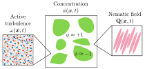

I am a PhD candidate in chemical engineering at Stanford University. I am interested in developing low-dimensional equations that bridge microscopic interactions and macroscopic behavior of systems with large numbers of particles. I apply this approach to study soft materials, such as colloids, foams, polymers, liquid crystals, and multiphase systems.
Links:
Google Scholar |
GitHub
Contact:
agubbala [at] stanford [dot] edu
Coarse-graining
A key challenge in coarse-graining (systematically reducing the degrees of freedom of a large system) is developing a low-dimensional equation that effectively captures the complexities of the underlying dynamics. In the last stretch of my dissertation, I am exploring how modern machine learning algorithms can inform the design of such equations, particularly in regimes that are difficult to tackle using classical approaches alone.
Multiphase systems
Using field-theoretic methods, I studied liquid-liquid phase-separation (where the minority phase nucleates into spherical droplets that grow slowly over time) in different complex fluid backgrounds. If the background is an active fluid, such as bacterial suspensions that are turbulent at low Reynolds numbers, I examined how such unusual mixing affects the droplet size and structure. If the background is an an anisotropic elastic fluid, modeled using liquid crystals to capture fibrous media, I examined how the elasticity of the background reshapes and compresses the growing droplets.
